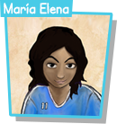
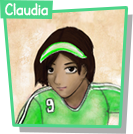

Indicaciones
Para cada uno de los deseos que no son indispensables, presiona con el dedo sobre la columna Importante o Deseable, para indicar el grado de importancia que según tú tiene.
En el momento en que haces tu elección, el tutor te dará una retroalimentación.

María Elena tiene once años y cuatro jugando futbol.
Es la más rápida de las tres.
Además, tiene una excelente condición física.
Su capacidad goleadora es buena, pero su habilidad con el balón es sólo aceptable.

Claudia tiene doce años y dos años jugando futbol.
Su capacidad goleadora es excelente y tiene una excelente habilidad con el balón.
Sin embargo, su condición física es sólo aceptable y no corre muy rápido.

Ana María tiene once años y no ha jugado futbol en un equipo antes.
Tiene una excelente condición física y corre muy rápido.
Sin embargo, su capacidad goleadora es sólo aceptable y su habilidad con el balón es mediana.